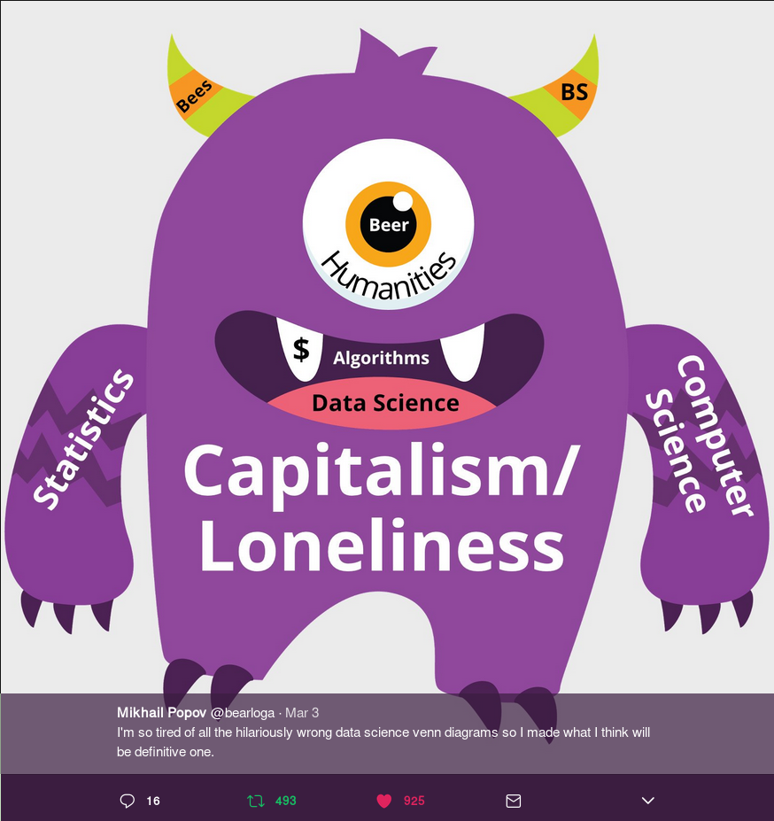
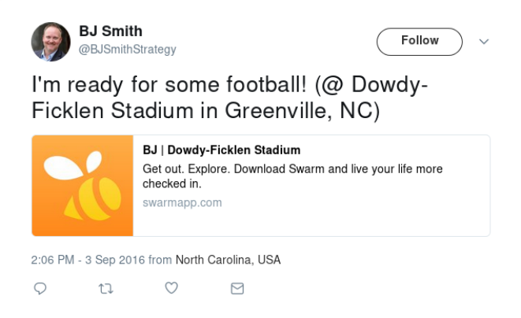
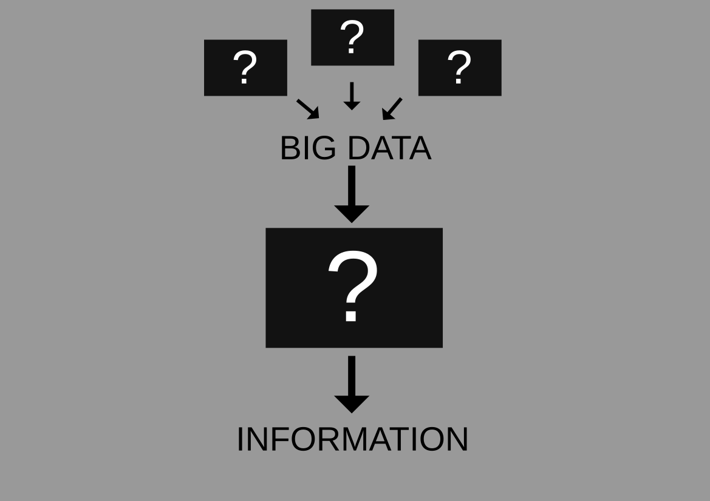
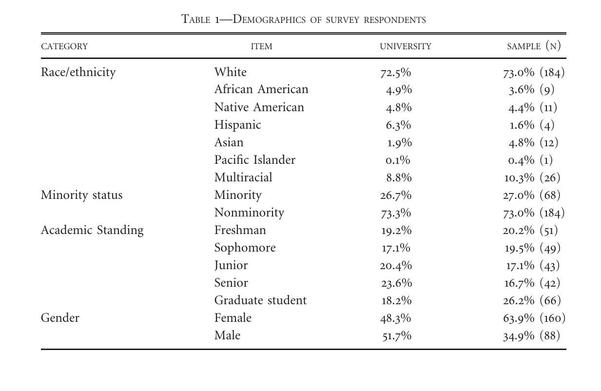
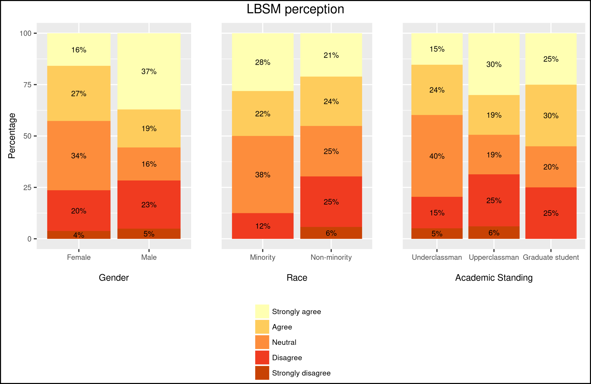
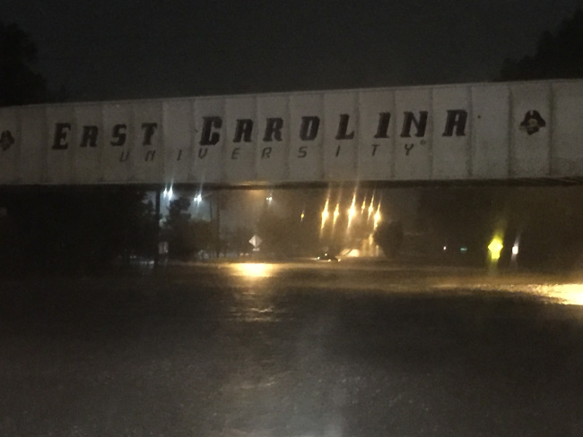

Location-based Social Media in a GIScience Context: Dismantling Big Data's Black Boxes
Matthew Haffner
Department of Geography
Oklahoma State University
Data Science and Big Data


Source: https://4.bp.blogspot.com/-0cbXveb1J_0/V-FtjJZ4rqI/AAAAAAAAMHM/
bS32Pio2a1IFOyp5T86S0jiyB-3KAN1iwCEw/s1600/download%2B%25281%2529.png

Source: http://datascienceassn.org/sites/default/files/users/user34/fourthbubble/FourthBubble.png

Source: https://datascience.stackexchange.com/questions/2403/
data-science-without-knowledge-of-a-specific-topic-is-it-worth-pursuing-as-a-ca

Source: https://twitter.com/bearloga/status/837756738690437121?lang=en
Big Data
- Big data is constantly changing (Schilling and Bozic 2014)
- Volume, Velocity, and Variety (Laney 2001)
- "Any data that cannot fit into an Excel Spreadsheet" (Batty 2013, p. 273).
Tweet Example

Source: https://twitter.com/BJSmithStrategy/status/772179089163714565
Tweet Example
{
"_source": {
"created_at": "Sat Sep 03 21:06:55 +0000 2016",
"id": 772179089163714600,
"id_str": "772179089163714565",
"text": "I'm ready for some football! (@ Dowdy-Ficklen Stadium in Greenville, NC) https://t.co/0c14LzNgVi",
"source": """Foursquare""",
"truncated": false,
"in_reply_to_status_id": null,
"in_reply_to_status_id_str": null,
"in_reply_to_user_id": null,
"in_reply_to_user_id_str": null,
"in_reply_to_screen_name": null,
"user": {
"id": 15836013,
"id_str": "15836013",
"name": "",
"screen_name": "",
"location": "Greenville, NC",
"url": "",
"description": "Podcast Producer & Storyteller: Social Impact Show, Marketing Group Therapy || Co-founder of @PodAbility || Adjunct Web Design Instructor || Trail Runner",
"protected": false,
"verified": false,
"followers_count": 62471,
"friends_count": 54406,
"listed_count": 874,
"favourites_count": 11100,
"statuses_count": 7954,
"created_at": "Wed Aug 13 12:38:34 +0000 2008",
"utc_offset": -14400,
"time_zone": "Eastern Time (US & Canada)",
"geo_enabled": true,
"lang": "en",
"contributors_enabled": false,
"is_translator": false,
"profile_background_color": "4E4E4E",
"profile_background_image_url": "http://pbs.twimg.com/profile_background_images/579270218981076992/RH0mUlyb.jpg",
"profile_background_image_url_https": "https://pbs.twimg.com/profile_background_images/579270218981076992/RH0mUlyb.jpg",
"profile_background_tile": false,
"profile_link_color": "303030",
"profile_sidebar_border_color": "FFFFFF",
"profile_sidebar_fill_color": "CFBC0E",
"profile_text_color": "666666",
"profile_use_background_image": true,
"profile_image_url": "http://pbs.twimg.com/profile_images/633730296140042240/dERRtA2W_normal.jpg",
"profile_image_url_https": "https://pbs.twimg.com/profile_images/633730296140042240/dERRtA2W_normal.jpg",
"profile_banner_url": "https://pbs.twimg.com/profile_banners/15836013/1461443632",
"default_profile": false,
"default_profile_image": false,
"following": null,
"follow_request_sent": null,
"notifications": null
},
"geo": {
"type": "Point",
"coordinates": [
35.59697152,
-77.3650266
]
},
"coordinates": {
"type": "Point",
"coordinates": [
-77.3650266,
35.59697152
]
},
"place": {
"id": "3b98b02fba3f9753",
"url": "https://api.twitter.com/1.1/geo/id/3b98b02fba3f9753.json",
"place_type": "admin",
"name": "North Carolina",
"full_name": "North Carolina, USA",
"country_code": "US",
"country": "United States",
"bounding_box": {
"type": "Polygon",
"coordinates": [
[
[
-84.321948,
33.752879
],
[
-84.321948,
36.588118
],
[
-75.40012,
36.588118
],
[
-75.40012,
33.752879
]
]
]
},
"attributes": {}
},
"contributors": null,
"is_quote_status": false,
"retweet_count": 0,
"favorite_count": 0,
"entities": {
"hashtags": [],
"urls": [
{
"url": "https://t.co/0c14LzNgVi",
"expanded_url": "https://www.swarmapp.com/c/fcKuR5XKonZ",
"display_url": "swarmapp.com/c/fcKuR5XKonZ",
"indices": [
73,
96
]
}
],
"user_mentions": [],
"symbols": []
},
"favorited": false,
"retweeted": false,
"possibly_sensitive": false,
"filter_level": "low",
"lang": "en",
"timestamp_ms": "1472936815907"
}
}
Big Data Workflow
- Operating system: Manjaro (Arch Linux derivative)
- Programming/editing: Emacs/Vim
- Version control: Git (GitLab and GitHub)
- Spatial data mining: Python
- Data storage: ElasticSearch (NoSQL)
- Data management: Bash, Python, and R
- Spatial statistics/analysis: R
- Visualization and mapping: R

Location-based social media behavior and perceptions: Views of university students
VGI and LBSM
- Volunteered geographic information (VGI; Goodchild 2007)
- Location-based social media (LBSM; see Evans 2015)
- Platform (e.g. Facebook, OpenStreetMap) biases (Bartoshek and Kebler 2013; Stephens 2013; Mathews et al. 2013; Zickuhr 2013; Greenwood, Perrin, and Duggan 2016)
- Significance: contributors' demographics have implications
Research focus
- Demographics, usage patterns, and perceptions
- Questions
- Are there differences in terms of gender, race, and academic standing?
- Why do people contribute?
- What are the implications?
Data
- Survey administered to 5000 random Oklahoma State students
- 46 questions with 7 sections
- Demographics
- Mobile phone and tablet use
- Social media use
- Geotagging on social media
- Instagram use
- Twitter use
- LBSM perceptions
- n = 253
Demographics of survey respondents

Methods
- Differences in use:
- Chi-square tests
- Perception:
- Likert-scale items: Ordinal logistic regression (OLR)
- Open-ended items: Qualitative summaries
Use of Social Media and LBSM

Use of Social Media and LBSM

Chi-squared tests for use of social media and LBSM

Chi-squared tests for use of social media and LBSM

"Geotagging social media posts is a good way to let my friends and my followers know where I am and what I am up to."


"I feel that geotagging infringes on my privacy." 

"Locational journaling"
Why do you choose to geotag social media posts?
- "So that I can look back and remember where I was and what I was doing at certain times."
- "To remember where I was at the time of the post."
- "So I can remember where and what I did in my life."
The importance of place
Why do you choose to geotag social media posts?
- "Usually it's just to further emphasize the caption."
- "[B]ecause where I am is important to the post."
- "Because where I am is part of the story being told by my post."
Why do you choose to geotag social media posts?

Implications/Conclusions
- Twitter is reasonably representative
- The greatest differences are between females and males
- Not all VGI principles apply to LBSM
- Place is an important component of social media posts
- Users geotag content at places they visit infrequently
A (Critical) Spatial Analysis of Non-English Twitter Activity in Houston, Texas
Introduction
- VGI data sources can supplement (or replace) conventional data sources (See et al. 2016)
- Cities are becoming more reliant on big data (Kitchin 2014)
- Significance: Governments can use social media to address needs of underrepresented groups
Research Focus
- Spatial patterns of non-English users rather than tweets
User/tweet language
{
"_source": {
"created_at": "Sat Sep 03 22:19:37 +0000 2016",
"id": 772197385074126800,
"id_str": "772197385074126851",
"text": "Labor Day fun with the number 1 #LETSGO #Mom @ Wrightsville Beach Willmington Nc https://t.co/3GFmtrUfPI",
"source": """Instagram""",
"truncated": false,
"in_reply_to_status_id": null,
"in_reply_to_status_id_str": null,
"in_reply_to_user_id": null,
"in_reply_to_user_id_str": null,
"in_reply_to_screen_name": null,
"user": {
"id": 453603866,
"id_str": "453603866",
"name": "",
"screen_name": "",
"location": "San Diego, CA",
"url": "",
"description": "Focused on the career but keep a snickers in the blazer",
"protected": false,
"verified": false,
"followers_count": 268,
"friends_count": 170,
"listed_count": 9,
"favourites_count": 36,
"statuses_count": 1143,
"created_at": "Tue Jan 03 03:05:10 +0000 2012",
"utc_offset": -25200,
"time_zone": "Pacific Time (US & Canada)",
"geo_enabled": true,
"lang": "es",
"contributors_enabled": false,
"is_translator": false,
"profile_background_color": "C0DEED",
"profile_background_image_url": "http://pbs.twimg.com/profile_background_images/393682561/exotic-paradise-f.jpg",
"profile_background_image_url_https": "https://pbs.twimg.com/profile_background_images/393682561/exotic-paradise-f.jpg",
"profile_background_tile": true,
"profile_link_color": "0084B4",
"profile_sidebar_border_color": "C0DEED",
"profile_sidebar_fill_color": "DDEEF6",
"profile_text_color": "333333",
"profile_use_background_image": true,
"profile_image_url": "http://pbs.twimg.com/profile_images/625328254635888640/XtCt74GW_normal.jpg",
"profile_image_url_https": "https://pbs.twimg.com/profile_images/625328254635888640/XtCt74GW_normal.jpg",
"profile_banner_url": "https://pbs.twimg.com/profile_banners/453603866/1437924850",
"default_profile": false,
"default_profile_image": false,
"following": null,
"follow_request_sent": null,
"notifications": null
},
"geo": {
"type": "Point",
"coordinates": [
34.24135302,
-77.87192384
]
},
"coordinates": {
"type": "Point",
"coordinates": [
-77.87192384,
34.24135302
]
},
"place": {
"id": "3b98b02fba3f9753",
"url": "https://api.twitter.com/1.1/geo/id/3b98b02fba3f9753.json",
"place_type": "admin",
"name": "Carolina del Norte",
"full_name": "Carolina del Norte, USA",
"country_code": "US",
"country": "Estados Unidos",
"bounding_box": {
"type": "Polygon",
"coordinates": [
[
[
-84.321948,
33.752879
],
[
-84.321948,
36.588118
],
[
-75.40012,
36.588118
],
[
-75.40012,
33.752879
]
]
]
},
"attributes": {}
},
"contributors": null,
"is_quote_status": false,
"retweet_count": 0,
"favorite_count": 0,
"entities": {
"hashtags": [
{
"text": "LETSGO",
"indices": [
32,
39
]
},
{
"text": "Mom",
"indices": [
40,
44
]
}
],
"urls": [
{
"url": "https://t.co/3GFmtrUfPI",
"expanded_url": "https://www.instagram.com/p/BJ6Qk7Fh7fN/",
"display_url": "instagram.com/p/BJ6Qk7Fh7fN/",
"indices": [
81,
104
]
}
],
"user_mentions": [],
"symbols": []
},
"favorited": false,
"retweeted": false,
"possibly_sensitive": false,
"filter_level": "low",
"lang": "en",
"timestamp_ms": "1472941177992"
}
}
Research Objectives
- Focus: spatial patterns of non-English users rather than tweets
- Approach: "Abductive" reasoning (Miller and Goodchild 2015)
- Questions:
- Can conventional variables explain the production of Twitter activity by non-English users?
- How does LBSM inform us about place and users' behaviors?
Methods
- Ordinary least squares (OLS) regression
- Geographically weighted regression (GWR)
Data
- Counts of Twitter users with an account language other than English who produced a tweet in Harris County, TX between October 2015 to November 2016
- Census data
- Census tracts (n = 786)
- American Community Survey (ACS)
- 2014 Longitudinal origin-destination employment statistics
Study Area

Variable Transformation
Box-Cox (Box and Cox 1964)
$$y_\lambda = {y^\lambda - 1 \over \lambda}$$
$$\lambda = -0.06$$
GWR Results

Dependent Variable Non-stationarity

Outliers

Conclusions
- JOBS has a greater effect on NETU than POP
- Characteristics of place cannot be ascribed to users
- Geotagged Twitter data at this scale likely says more about places than users
Contributions to East Carolina University
Natural Disasters and VGI
{
"_source": {
"created_at": "Sun Sep 04 00:39:51 +0000 2016",
"id": 772232674991829000,
"id_str": "772232674991828992",
"text": "Tropical Storm Yesterday ... BBQ and Football today ... #NC #Hermine @ Pinehurst, North Carolina https://t.co/9iSxygxmu5",
"source": """Instagram""",
"truncated": false,
"in_reply_to_status_id": null,
"in_reply_to_status_id_str": null,
"in_reply_to_user_id": null,
"in_reply_to_user_id_str": null,
"in_reply_to_screen_name": null,
"user": {
"id": 144926753,
"id_str": "144926753",
"name": "",
"screen_name": "",
"location": "Pinehurst, NC",
"url": null,
"description": "Just Livin Man....Just Livin... Former DU Pioneer, 2005 National Champions, Retired Professional hockey Player, Proud Coloradoan,",
"protected": false,
"verified": false,
"followers_count": 486,
"friends_count": 440,
"listed_count": 11,
"favourites_count": 2781,
"statuses_count": 2136,
"created_at": "Mon May 17 17:39:40 +0000 2010",
"utc_offset": -25200,
"time_zone": "Pacific Time (US & Canada)",
"geo_enabled": true,
"lang": "en",
"contributors_enabled": false,
"is_translator": false,
"profile_background_color": "000000",
"profile_background_image_url": "http://abs.twimg.com/images/themes/theme6/bg.gif",
"profile_background_image_url_https": "https://abs.twimg.com/images/themes/theme6/bg.gif",
"profile_background_tile": false,
"profile_link_color": "ABB8C2",
"profile_sidebar_border_color": "000000",
"profile_sidebar_fill_color": "000000",
"profile_text_color": "000000",
"profile_use_background_image": false,
"profile_image_url": "http://pbs.twimg.com/profile_images/759504224011116544/MvQao_Yg_normal.jpg",
"profile_image_url_https": "https://pbs.twimg.com/profile_images/759504224011116544/MvQao_Yg_normal.jpg",
"profile_banner_url": "https://pbs.twimg.com/profile_banners/144926753/1469914301",
"default_profile": false,
"default_profile_image": false,
"following": null,
"follow_request_sent": null,
"notifications": null
},
"geo": {
"type": "Point",
"coordinates": [
35.19611111,
-79.46416667
]
},
"coordinates": {
"type": "Point",
"coordinates": [
-79.46416667,
35.19611111
]
},
"place": {
"id": "d89569e1c7f0c216",
"url": "https://api.twitter.com/1.1/geo/id/d89569e1c7f0c216.json",
"place_type": "city",
"name": "Pinehurst",
"full_name": "Pinehurst, NC",
"country_code": "US",
"country": "United States",
"bounding_box": {
"type": "Polygon",
"coordinates": [
[
[
-79.520509,
35.160156
],
[
-79.520509,
35.23152
],
[
-79.421773,
35.23152
],
[
-79.421773,
35.160156
]
]
]
},
"attributes": {}
},
"contributors": null,
"is_quote_status": false,
"retweet_count": 0,
"favorite_count": 0,
"entities": {
"hashtags": [
{
"text": "NC",
"indices": [
56,
59
]
},
{
"text": "Hermine",
"indices": [
60,
68
]
}
],
"urls": [
{
"url": "https://t.co/9iSxygxmu5",
"expanded_url": "https://www.instagram.com/p/BJ6goHCDxL5/",
"display_url": "instagram.com/p/BJ6goHCDxL5/",
"indices": [
97,
120
]
}
],
"user_mentions": [],
"symbols": []
},
"favorited": false,
"retweeted": false,
"possibly_sensitive": false,
"filter_level": "low",
"lang": "en",
"timestamp_ms": "1472949591764"
}
}
Natural Disasters and VGI
- Planning
- Preparedness
- Vulnerability
- Reporting
- #HarveySOS
- #IrmaSOS
- #MatthewSOS ?

Source: https://mgtvwnct.files.wordpress.com/2016/10/flooding-under-bridge.jpg?w=650
GIScience Applied to Big Data
Source: https://news.okstate.edu/sites/default/files/cowboy2.jpg
- Fluvial processes
- Flow modeling
- Flooding
- Climate change and variability
- Precipitation systems
GIS (Programming) Education
- Do employers value:
- GIS programming?
- Free and Open Source software?
- How do we continue to adapt GIS coursework to meet the needs of a changing job market?
Comments / Questions
References
- Bartoschek, T. and C. Kebler. 2013. VGI in Education: From K-12 to Graduate Studies. In Crowdsourcing Geographic Knowledge, edited by D. Sui, M. F. Goodchild, and S. Elwood, 341-360. Dordrecht, Netherlands: Springer.
- Batty, M. 2013. Big data, smart cities and city planning. Dialogues in Human Geography. 3 (3): 274-279.
- Evans, Leighton. 2015. Locative Social Media: Place in the Digital Age. Baginstroke, U.K.: Palgrave-Macmillan.
- Goodchild, M. F. 2007. Citizens as Sensors: The World of Volunteered Geography. GeoJournal 39 (4): 211-221.
- Greenwood, S., A. Perrin, and M. Duggan. 2016. Social Media Update 2016. Pew Research Center. http://www.pewinternet.org/2016/11/11/social-media-update-2016/
- Kitchin, R. 2014. The Real-Time City? Big Data and Smart Urbanism. GeoJournal 79 (1): 1-14.
- Laney, D. 2001. 3D Data Management: Controlling Data Volume, Velocity, and Variety. Application Delivery Strategies Meta Group. https://blogs.gartner.com/doug-laney/files/2012/01/ad949-3D-Data-Management-Controlling-Data-Volume-Velocity-and-Variety.pdf.
References
- Mathews, A., Y. Lu, M. Patton, N. Dede-Bamfo, and J. Chen. 2013. College Students' Consumption, Contribution, and Risk Awareness Related to Online Mapping Services and Social Media: Does Geography and GIS Knowledge Matter? GeoJournal 78 (4): 627-639.
- Miller, H., and M. Goodchild. 2015. Data-driven Geography. GeoJournal. 80: 449-461.
- See, L., P. Mooney, G. Foody, L. Bastin, A. Comber, J. Estima, S. Fritz, N. Kerle, B. Jiang, M. Laakso, H. Liu, G. Milvcinski, M. Nikvsivc, M. Painho, A. Podor, A. Olteanu-Raimond, and M. Rutzinger. 2016. Crowdsourcing, Citizen Science or Volunteered Geographic Information? The Current State of Crowdsourced Geographic Information. International Journal of Geo-Information. 5 (5): 2220-9964.
- Schilling, P., and K. Bozic. 2014. The Big To Do About "Big Data." Orthopedic Healthcare Worldwide. 472: 3270-3272.
- Stephens, M. 2013. Gender and the GeoWeb: Divisions in the Production of User-generated Cartographic Information. GeoJournal 78: 981-996.